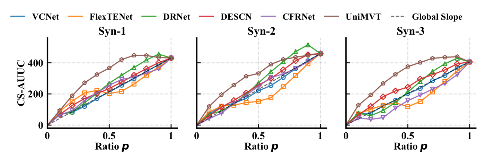

- \(\mathrm{logit}\,p_t - \mathrm{logit}\,p_0 = \eta\,t\)額面 \(t\) の効果を、ロジット上で額面に比例するずれと仮定する。確率で見ると効果は額面とともに頭打ちになり、利用者ごとの感度 \(\eta\) は額面によらない 1 つの値になる。
- CS-Qini 103.09 対 38.12額面への感度が高い利用者を上位に並べられたかを測る指標。合成データ Syn-1 で、比較手法で最もよい DRNet を上回った。Syn-2 と Syn-3 でも UniMVT が最も高い（Table 1）。
- クーポン収益 +18.14%快手の本番トラフィックの 10% を使った A/B テストで、従来の 2 段階モデルと比べた値。クーポン表示時の較正誤差は 86.51% 減った（Table 3）。
クーポンを添えた広告のクリックには本来の興味とクーポンによる押し上げが混ざっている
推薦や広告の CTR 予測は、ランキングや課金の基礎になる。ところが割引クーポンのような施策があると、同じ利用者と商品の組でもクーポンの有無でクリック率が大きく変わる。観測されたクリックは、利用者の本来の興味とクーポンによる押し上げが混ざったものである。論文は、この押し上げを区別しない CTR モデルでは基準の CTR の較正がずれ、下流のランキングや課金がゆがむと指摘する。
クーポンの額面はいろいろある。もともと興味の強い利用者にはクーポンが要らないことがある一方、価格に敏感な利用者には大きな割引が要る。額面を上げればクリックは増えやすいが、費用も増える。論文は額面ごとに異なる利用者の反応（異質な処置効果）をとらえる必要があるとしている。
既存の作り方は 2 通りある（図1）。CTR モデルとアップリフトモデルを別々に学習する 2 段階型では、アップリフトモデルはクーポンを受けた標本だけで学習し、上流の CTR モデルはクーポンを知らないまま予測する。共有ボトムの多タスク型は 2 つを 1 つのモデルにまとめるが、過去の配布が利用者の特徴に依存しているため交絡が残る。論文は、本来の興味とクーポンへの反応を分けないかぎり較正がずれると述べる。
![Two baseline architectures. Left, Baseline 1: a two-stage separate model, with a CTR model trained on full data predicting p0 and an uplift model trained on treated-only data predicting delta p with target Y_t minus p0-hat; a red note says there is no logic consistency, delta p is not p_t minus p0. Right, Baseline 2: a unified multi-task model with a shared bottom feeding a CTR head (target Y0, trained on control data) and an uplift head (target Y_t, trained on treated-only data); a red note marks information coupling in the shared bottom.](assets/fig1_baselines.png)
額面の効果をロジット上で額面に比例するずれとして表す
データは特徴 \(\mathbf{x}\)、クーポンの有無 \(w\)、額面 \(t\)（クーポンなしなら \(t=0\)）、クリック \(y\) からなる。論文は一致性、未交絡、重なりという標準的な仮定に加えて、次の構造を仮定する。クーポンなしの CTR（基準の CTR）を \(p_0(\mathbf{x})\)、額面 \(t\) のクーポンを出したときの CTR を \(p_t(\mathbf{x},t)\) とすると、
論文は \(\eta(\mathbf{x})\) を latent unit CATE（uCATE）と呼ぶ。額面 1 単位あたり、クリックの起こりやすさがロジット上でどれだけずれるかを表す利用者ごとの感度で、額面によらない。確率の上での効果（CATE）は次のようになり、額面を上げると効果は頭打ちになる。
確率は 0 から 1 の範囲に収まるので、確率の上で線形を仮定するのは避けたと論文は述べている。この仮定の根拠には無作為化実験で得た統計と、経済学でいう限界効用の逓減を挙げている。
UniMVT は特徴を 3 種類のエキスパートで分け、基準の CTR と感度を別々のタワーで推定する
最初の DCR 層（Deconfounded Causal Representation）は、Multi-gate Mixture-of-Experts で入力を符号化する。エキスパートは 3 群あり、Base は全体に共通する基準の好み、Shared は処置によらない交絡因子、Treatment はクーポンに反応する特徴をとらえる。ゲートで混ぜて基準用の表現 \(\mathbf{u}^0\) と処置用の表現 \(\mathbf{u}^t\) を作り、相手側専用のエキスパートからは勾配を止めて、目的の衝突を防ぐ。さらに、エキスパート群どうしの重み行列が直交するように罰則を課す。
続く HTE ネットワークでは、基準タワーが \(\mathbf{u}^0\) から基準の CTR \(\hat p_0\) を、処置タワーが \(\mathbf{u}^t\) とクーポンの埋め込みから \(\hat p_t\) を予測する。処置タワーでは、クーポンの埋め込みから作った 0〜2 の倍率を各層の出力に掛ける TA-Gate で、額面の情報を反映させる。基準タワーはクーポンなしの標本で、処置タワーはクーポンありの標本で、それぞれ交差エントロピーにより学習する。
![Overview of UniMVT. Training phase, left to right: advertisement features (dense and sparse) and coupon features go through embedding layers; the Deconfounded Causal Representations block has Base, Shared and Treatment experts with a base gate and a treatment gate, stop-gradient links and an orthogonality regularizer; the base representation feeds a bCTR tower giving p0 with loss L_base; the treatment representation feeds a uCATE tower (eta-hat), an intensity tower (t-hat, loss L_t) and a tCTR tower with a treatment-aware gate (p_t, loss L_treat); a counterfactual X-network combines them in logit space into L_x-treat (treated data) and L_x-base (control data). Inference phase, right: base CTR p0-hat and uCATE eta-hat times each candidate coupon value q give p_t-hat; ROI(q) = delta CTR(q) / Cost(q); choose q* = argmax ROI(q) subject to ROI > lambda; issue q* if yes, no coupon otherwise.](assets/fig2_overview.png)
クーポンを受けた人と受けなかった人のそれぞれで観測していない側を予測し、観測値と突き合わせる
X-learner にならった Counterfactual X-Network が、2 つのタワーを感度 \(\hat\eta = \mathrm{ReLU}(\mathrm{MLP}(\mathbf{u}^t))\) でつなぐ。ReLU で \(\hat\eta\) を非負に保ち、単調性の仮定を満たす。クーポンなしの標本には額面がないので、クーポンありの標本で学習した額面予測ヘッドを使い、あり得た額面 \(\hat t\) を \([t_{\min}, t_{\max}]\) の範囲で補う。
クーポンありの群 \(\mathcal{T}\) では、基準の予測に実際の額面ぶんのずれを足して、観測したクリックと比べる。クーポンなしの群 \(\mathcal{C}\) では、補った額面ぶんのずれを処置側の予測から引いて比べる（いずれも二乗誤差）。こうすると一方の群の教師信号が \(\hat\eta\) を通じて他方の群にも伝わり、論文によれば選択バイアスが和らいで感度も較正される。全体の損失は 2 つのタワーの交差エントロピー、額面予測の誤差、この反事実の損失、直交性の罰則の重みつき和である。
理論面では、次の 2 つを仮定すると、反事実の損失を最小化したとき \(\hat\eta\) が真の \(\eta\) に確率収束するという定理を示している。1 つは、額面が 0 から離れていて（\(|t| \ge t_{\min} > 0\)）、クーポンなしの群で考える額面の台がクーポンありの群の台に含まれること。もう 1 つは、処置側の予測と額面の予測が一致推定量であることである。なお本文の証明の概略はロジットではなく確率の上での加法的な関係 \(p_0 + \eta t \approx p_t\) で書かれている。
候補の額面ごとに ROI を計算し、最大の ROI がしきい値を超えればその額面で配る
推論では利用者ごとに \(\hat p_0\) と \(\hat\eta\) を出し、候補の額面 \(q \in \{q_1, \dots, q_{\max}\}\) のそれぞれについてクリック確率の増分 \(\Delta\mathrm{CTR}_i(q) = \sigma(\mathrm{logit}\,\hat p_0 + \hat\eta_i q) - \hat p_0\) を計算する。期待コストは「額面 × クーポンを出したときのクリック確率 × 利用確率 \(\gamma\)」とし、次の ROI が最大となる \(q^*\) を選ぶ。
\(\mathrm{ROI}_i(q^*)\) がシステムで決めたしきい値 \(\lambda\) を超えれば額面 \(q^*\) のクーポンを出し、超えなければ出さない。\(\gamma\) と \(\lambda\) の決め方は書かれていない。
正解の効果が分かる合成データ 3 種と、快手のライブ配信クーポンの本番データで評価した
合成データ Syn-1〜3 はそれぞれ学習 80,000 件、テスト 8,000 件からなり、テストは無作為化実験（RCT）の標本だけである。反応曲線は上の仮定（ロジット上の線形なずれ）に従って生成した。額面の分布は Syn-1 と Syn-2 では単峰で、Syn-3 では本番のクーポンの段階を模した多峰である。価値の高い利用者ほど高い額面を受けやすいように、額面を特徴と交絡させている。
本番データは快手のライブ配信のクーポン配信ログから作った。クーポンなしの自然な接触と、額面の異なるクーポンを受けた接触の両方を含む。入力は利用者の属性、ライブ配信ルームの文脈、額面や種類といったクーポンの記述子である。件数は書かれていない。
比較手法は S-Learner、T-Learner、FlexTENet、CFRNet、DRNet、VCNet、DESCN の 7 つで、二値処置向けの手法には額面を入力として加えた。基準の CTR はクーポンなしでのクリック確率の AUC と LogLoss で評価する。アップリフトの評価には 2 つの指標を使う。予測した \(\eta\) の順に並べた上位 \(\phi\) の中で、クリックを額面に回帰した傾きを積み上げるのが CS-AUUC で、その傾きから全体の傾きを引いて、ランダムに配る場合からの上積みを測るのが CS-Qini である。
このページの数値は arXiv v3（2026 年 9 月 8 日、CIKM 2026 採録後の版）の本文と表による。ACM の出版版（会議録 pp. 8696–8703）の本文は自動取得できなかったため、照合していない。
感度の高い利用者を上位に並べる指標では合成データでも本番データでも UniMVT が最も高かった
Table 1 の CS-Qini は、UniMVT が Syn-1 で 103.09、Syn-2 で 83.94、Syn-3 で 100.34 だった。比較手法の中で最も高かったのは、Syn-1 と Syn-2 では DRNet（38.12、42.78）、Syn-3 では T-Learner（56.61）である。本番データの CS-Qini も UniMVT が 0.0293 で最も高く、次は CFRNet の 0.0178 だった（本番データの CS-AUUC は表に載っていない）。論文は、比較手法が額面の大きさそのものに引きずられ、利用者の感度よりも高い額面に高い得点をつけているためだろうと述べている。
基準の CTR の AUC と LogLoss は、合成データでは手法間の差が小さい。たとえば Syn-1 の AUC は UniMVT 0.6945、DRNet 0.6944 で、Syn-2 では DRNet（0.7028）が UniMVT（0.7025）を上回った。本番データでは UniMVT の LogLoss が 0.1776 で、次に小さい VCNet（0.2100）との差が大きい。なお Table 1 の Syn-1 では UniMVT の LogLoss 0.3865 が太字になっているが、CFRNet（0.3863）、DRNet（0.3864）、VCNet（0.3862）のほうが小さい値になっている。

ロジット上の線形な仮定や反事実の損失を外すと、本番データの CS-Qini はほぼ 0 まで下がった
Table 2 は本番データでの切除実験である。全体のモデルの CS-Qini 0.0293 に対し、ずれをロジット上で与えない変種では 0.0008、処置の効果に制約を置かない変種では 0.0004、反事実の損失を外した変種では 0.0042 だった。DCR 層の直交正則化を外すと 0.0097、共有エキスパートを外すと 0.0132 になった。
一方、基準の CTR の AUC はどの変種も 0.9401〜0.9460 で、全体のモデル（0.9471）との差は小さい。論文は、構造についての仮定がないと深いネットワークは事実の予測精度だけを高め、観測データの偏りに過学習すると解釈している。
快手の A/B テストでは 2 段階モデルに比べてクーポン経由の収益が 18.14% 増え、較正の誤差も減った
オンライン A/B テストは快手の本番トラフィックから無作為に取った 10% で行い、群どうしが重ならないようにした。基準は CTR とアップリフトを別々に学習する従来の 2 段階モデルで、共有エンコーダをもつ多タスクモデル（Unified Model）とも比べた。値は 2 段階モデルからの変化で、左が UniMVT、右が Unified Model である（Table 3）。
- クーポン経由の収益：+18.14%、+7.53%
- クーポンなしの収益：+0.37%、+0.12%
- ROI：+8.80、+3.53（単位は表に書かれていない）
- 較正誤差 \(|\mathrm{PCOC}-1|\)（クーポンあり）：−86.51%、−70.66%
- 較正誤差 \(|\mathrm{PCOC}-1|\)（クーポンなし）：−50.00%、−4.17%
論文によれば、UniMVT は A/B テストのあと快手のライブ配信の広告枠に全面導入され、ほかの施策への展開も進んでいる。テストの期間と統計的な有意性は書かれていない。
予算の総額は扱わず、利用者ごとに ROI が最大の額面を選び、しきい値で配るかどうかを決める
- 推定するもの：偏りを除いた基準の CTR \(p_0(\mathbf{x})\) と、ロジット上の感度 \(\eta(\mathbf{x})\)。任意の額面の効果 \(\tau(\mathbf{x},t)\) はこの 2 つから計算する。結果はクリックで、収益や購入額はモデルの出力に含まれない。
- コストの扱い：期待コストを「額面 × クーポンを出したときのクリック確率 × 利用確率 \(\gamma\)」とする。クリックした人が利用したときにだけかかる形である。\(\gamma\) は利用者によらない記号で書かれており、モデルでは推定しない。
- 処置の種類：連続（多値）の額面 \(t\)。クーポンの種類も記述子として処置タワーに入るが、\(\eta\) は額面という 1 次元に対する感度である。
- 予算制約：総予算の制約は置いていない。ROI がしきい値 \(\lambda\) を超える利用者にだけ配るので、配布数と費用はその結果として決まる。\(\lambda\) の決め方は書かれていない。
- データ：合成データ 3 種と快手の本番データ（観察データ）。RCT の標本は合成データのテストだけである。
ROI 順の割当てとの関係（解説者の注）：ROI のしきい値で配る規則は、ナップザック問題の連続緩和で「増分 ÷ コスト」が境界の比以上の対象を取る規則と同じ形をしている。\(\lambda\) を予算から決めれば予算制約つきの割当てになるが、論文はこのつながりに触れていない。また額面の選択肢が複数あるとき、連続緩和（多選択ナップザック問題）では「1 段上の額面に上げたときの増分 ÷ コストの増分」で比べる。これに対し、論文は利用者ごとに ROI そのものが最大の額面を選ぶ。
さらに、論文の式どおりに計算すると \(\Delta\mathrm{CTR}_i(q) / \hat p_t(\mathbf{x}_i; q) = (1-\hat p_0)(1-e^{-\hat\eta_i q})\) となる。したがって \(\mathrm{ROI}_i(q) = (1-\hat p_0)(1-e^{-\hat\eta_i q}) / (\gamma q)\) は、\(\hat\eta_i > 0\) なら \(q\) について単調に減る。この目的のままだと、どの利用者にも候補の中で最小の額面が選ばれることになる（解説者の注）。論文はこの点に触れておらず、実際の運用で額面をどう選んでいるかは本文からは分からない。
@inproceedings{yang2026jointly,
title = {Jointly Optimizing Debiased CTR and Uplift for Coupons Marketing: A Unified Causal Framework},
author = {Yang, Siyun and Yang, Shixiao and Wang, Jian and Fan, Di and Cai, Kehe and Fu, Haoyan and Zhang, Jiaming and Wu, Wenjin and Jiang, Peng},
booktitle = {Proceedings of the 35th ACM International Conference on Information and Knowledge Management},
pages = {8696--8703},
publisher = {ACM},
year = {2026},
doi = {10.1145/3799682.3840119}
}